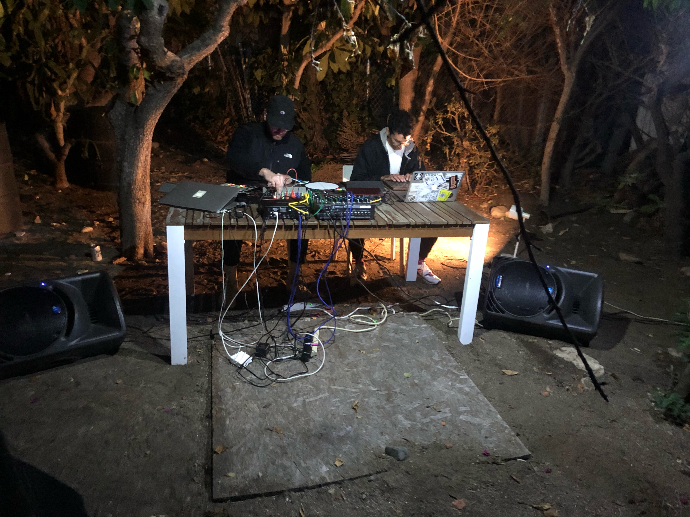
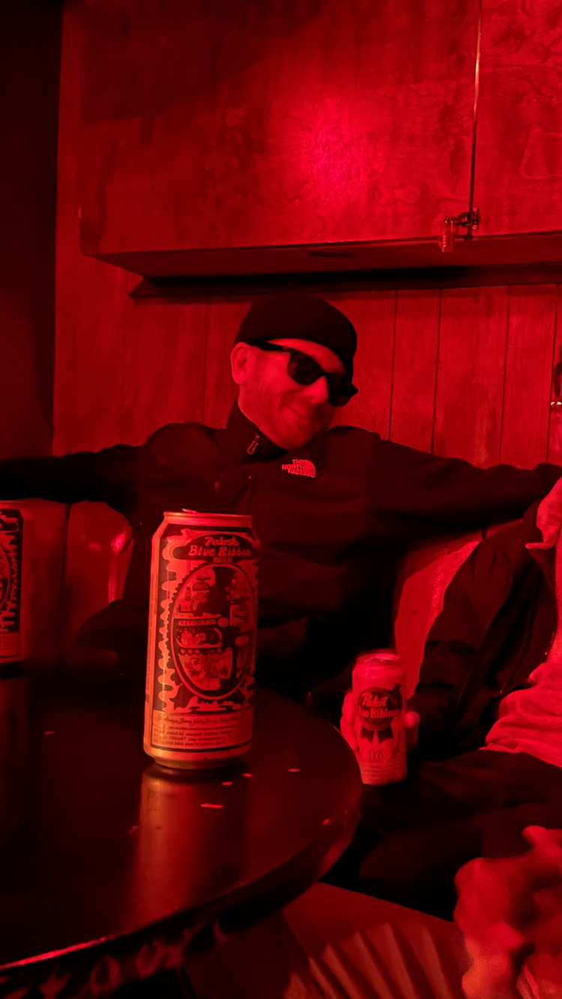
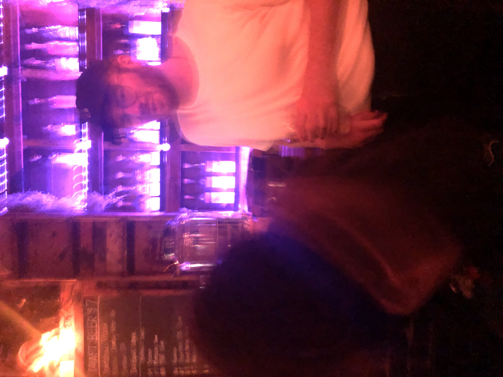

I'm a composer, music technologist, improviser, and audio engineer based in
Chicago, Illinois. The heart of my work is creating fluid musical
spaces by enabling unpredictable and idiosyncratic
interactions between human performers and digital media. I'm particularly
interested the aesthetics of the hyper-digital, glitch, and sonic extremes within
the contexts of electroacoustic and computer music.
My most recent compositional practice is focused on digital sounds generated from
audio deterioration, disrupted networks, and fuzzy data. I want the listener to feel
as if they are being routed through many reconstructed digital spaces, like being
zipped all over the world via a Virtual Private Network (VPN) in which various
forms of digital exhaust and trash are present. Many of the sounds
I work with are generated by provoked failures within commercial audio software systems,
low-level audio synthesis, and noise generated from machine learning algorithms.
My more technical computer music work focuses on designing interactive
systems using machine listening and machine learning.
You can see some of this work and read more in the "Research" section of this website.
I'm currently studying towards a PhD in Music Composition at the University
of Chicago. I work as the Technical Director for Ensemble Dal Niente. I'm also
a freelance audio engineer specializing in experimental music, contemporary classical music, and remote recording.
Outside of music you can find me cooking the best vegan food, ripping my track bike around Chicago, and dipping in the lake.
Pronouns: he/him/his.
Contact: hunterbrownmusic1 [@] gmail [.] com


